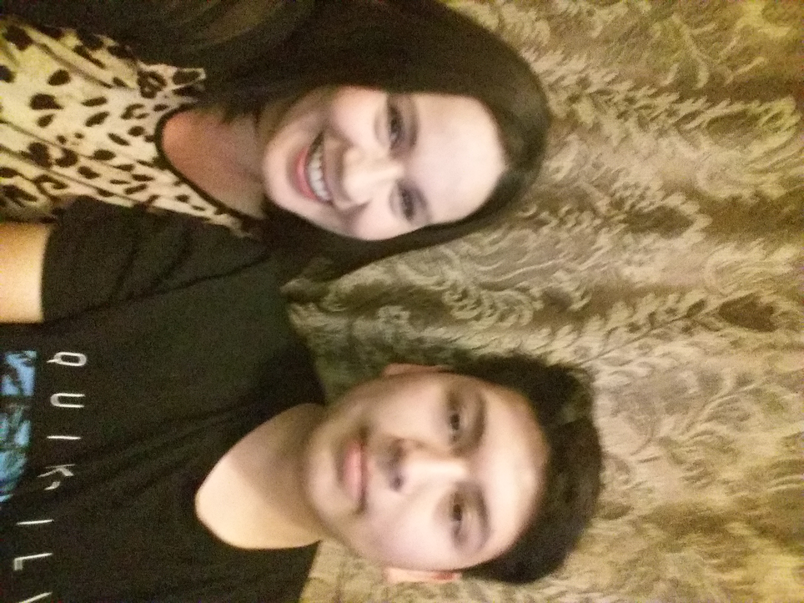

...
...
...
| - - - - - PRIDE - - - - - |
...

...
[ Artifact Reflection ]
Explain your artifact final product and ALL the steps you took to create it.
- I interviewed my mother as an attempt to learn more about my family's past and possibly my own, I had hoped to hear info that I was unaware of. In the end, this interview proved to be time spent enjoyed as my mother shared some quick stories.
- I interviewed my mother as an attempt to learn more about my family's past and possibly my own, I had hoped to hear info that I was unaware of. In the end, this interview proved to be time spent enjoyed as my mother shared some quick stories.
What is the most important thing you learned during this process?
- This interview with my mother taught me that sometimes it's good to just talk. If you're ever bored and want to know some random facts or people's opinions you should just talk.
- This interview with my mother taught me that sometimes it's good to just talk. If you're ever bored and want to know some random facts or people's opinions you should just talk.
Explain the significance of your artifact and how it connects to the narrative.
- By interviewing my mother I was able to learn more about her and hear things I might not have if I hadn't done the interview. I was curious before the interview about what my mother would even have to say, I was satisfied with the result.
- By interviewing my mother I was able to learn more about her and hear things I might not have if I hadn't done the interview. I was curious before the interview about what my mother would even have to say, I was satisfied with the result.
What do you wish you had spent more time on or done differently?
- I would be interested in hearing more stories by mother, but I would then have to know what right questions to ask to get them out.
- I would be interested in hearing more stories by mother, but I would then have to know what right questions to ask to get them out.
What did you find most challenging during this task?
- Thinking of questions to ask my mother was difficult at first, and filling in the dead space between answers was rough. It was hard to have a normal conversation when you are aware you are being recorded.
- Thinking of questions to ask my mother was difficult at first, and filling in the dead space between answers was rough. It was hard to have a normal conversation when you are aware you are being recorded.
...
| - - Origin Narrative - - |
...
The source of my existence is derived from many places, I don’t know anything about my great-great grandparents’ great grandparents, but I at least know some of the details about the past few generations of my family. Keeping track of a family tree is complicated so I’ll start with my dad’s side. My dad’s dad’s dad lived in Mexico, I don’t know where exactly but his wife was Josefina and they had a lot of kids of varying ages. They weren’t a very good couple so Josefina decided to leave him and Mexico for the US, she immigrated with her youngest kids. One of those kids was my grandfather Lalo, he was only around seven years old at the time of coming to the US. Lalo grew up to be a hard worker and blended in with American culture, Josefina never did completely learn English so it’s difficult for me to communicate with her. My dad’s mother’s dad apparently is from Chicago and was separated from his family after being forced into war, I don’t really know much about him. His youngest child was Maria, my grandmother. Somewhere along the way Lalo and Maria met, married, and had three children. The second child was Armando Campos, my dad and who I’m named after. Armando went to College at CSUSB but decided to not finish, he says he regrets that but if he hadn’t I wouldn’t be here.
Now I will move onto my mother’s side, which has a similar story. My mom’s dad’, dad was Howard, after returning from deployment he married Mary, my great grandmother. They had four kids but Howard wasn’t interested in sticking around, Mary was left to raise all four kids by herself. Those kids now say she did a terrible job and that they had to raise themselves. The second child was Dave, my grandfather. My mom’s mom’s mom was Margaret and she had a ton of kids too. One of those was Yolanda, my grandmother. Dave and Yolanda went to the same high school and became “Highschool Sweethearts”. Dave and Yolanda had four kids, with some distance in age between the latter half. The second child was Angela, my mom. Angela wasn’t interested in school so she never finished high school, she got a job instead. Angela worked at Castle Park, Armando worked at Castle Park, something worked out. Armando and Angela had two kids only a year apart and shortly after were married. The second child was Armando Romeo Campos, me.
...